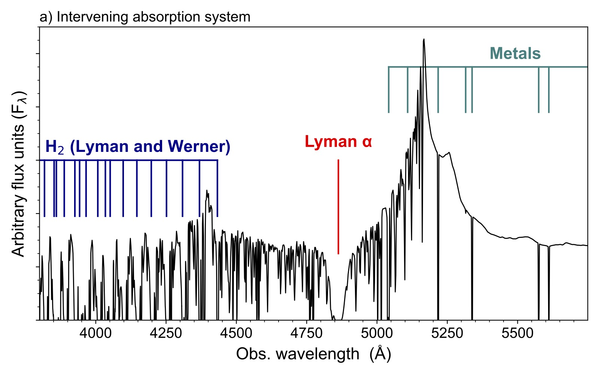

PLEASE GO AWAY!jens-kristian.krogager@ univ-lyon1.fr
Atomic and molecular gas in galaxies at cosmic noon
Studying HI absorption in spectra of luminous background sources such as quasars is the best way to probe neutral
hydrogen in individual galaxies beyond the local Universe (z ≳ 0.1) until the advent of the Square Kilometer Array. Of
particular interest for galaxy evolution studies are the so-called Damped Lyman-α Absorbers (DLAs; Wolfe et al. 2005),
whose large column densities of HI (log[NHI / cm-2] > 20.3) arise in self-shielded, galactic environments. The neutral
gas at even higher column densities (log[NHI / cm-2] ≥ 21.5) is sensitive to many physical processes, such as the
formation of molecular hydrogen (H2) and subsequently star formation (Bird et al. 2014; Noterdaeme et al. 2014).
Another important aspect of galaxy evolution is the build-up of metals over time and the redistribution of metals in and
around galaxies. Observations of DLAs offer a precise and model-independent way of measuring metallicities at high
redshift through the numerous metal absorption lines observed in optical spectra of distant quasars (Prochaska et al.
2003; De Cia et al. 2018).
Owing to the cross-section selection of absorbers and the insensitivity of the Lyman-alpha transition on temperature,
DLAs probe mostly the warm neutral medium (T ~ 104K). The cold neutral medium (T ~ 100K) is best traced by H2, found only in
a few percent of the overall DLA population (Balashev & Noterdaeme 2018). At high redshift, H2 is directly detectable in
optical spectra through Lyman and Werner bands in the rest-frame UV (900–1100Å). The simulated quasar spectrum shown in
Fig. 1 (left panel) illustrates the molecular and atomic absorption features expected in our survey.

Fig. 1 – Noiseless mock 4MOST quasar spectrum featuring an intervening absorption system
at z = 3. The tick marks indicate the absorption lines that allow us to quantify the chemical
and physical properties of the absorbing gas: Lyman α, H2 lines and metal lines.
The unbiased cosmic mass density of metals from 2 < z < 3
It has been shown that DLAs trace a significant fraction of metals over cosmic time, reaching ~100% of the inferred
metal mass, ΩMet, TOT, at z = 4 (Péroux & Howk 2020). However, this fraction is observed to decrease with decreasing
redshift based on optically selected samples. The colour-selection criteria of current optical quasar samples introduce
a redshift dependence on the dust bias (Krogager et al. 2019) that directly affects the measured cosmic mass density of
metals, ΩMet. While ΩMet at z = 3 may be underestimated by a factor of ~2, this increases to a factor of ~3 at z = 2.
Such a redshift-dependent bias would counteract the observed decrease in ΩMet / ΩMet, TOT. Our aim with this survey is
to constrain ΩMet as a function of redshift from an unbiased sample of nearly 2000 high-redshift DLAs.
The unbiased absorption cross-section of HI and H2 at z > 2
Current numerical simulations are still unable to reproduce the observed redshift evolution of the HI absorption
cross-section as inferred by the so-called line incidence, dn/dz (Bird et al. 2014; Hassan et al. 2020). If a dust bias
is present in current observations, it is important to correct for this before drawing conclusions about feedback
mechanisms in simulations. Moreover, simulations are only recently starting to resolve the cold (H2) and warm (HI)
neutral media in cosmological volumes (e.g., Nickerson et al. 2019; Feldmann et al. 2022). Hence, constraining the dn/dz
of H2 and HI in an unbiased sample will provide the first comparison to these new simulations.
References
Balashev & Noterdaeme 2018, MNRAS 478, 7;
Bird et al., 2014, MNRAS 445, 2313;
De Cia et al. 2018, A&A 611, 76;
Feldmann et al. 2022, arXiv: 2205.15325;
Hassan et al. 2020, MNRAS 492, 2835;
Krogager et al. 2019, MNRAS 486, 4377;
Nickerson et al. 2019, MNRAS 484, 1238;
Noterdaeme et al. 2014 A&A 566, 24;
Péroux & Howk 2020, ARAA, 58, 363;
Prochaska et al. 2003, ApJ 595, 9;
Wolfe et al. 2005, ARA&A 43, 861